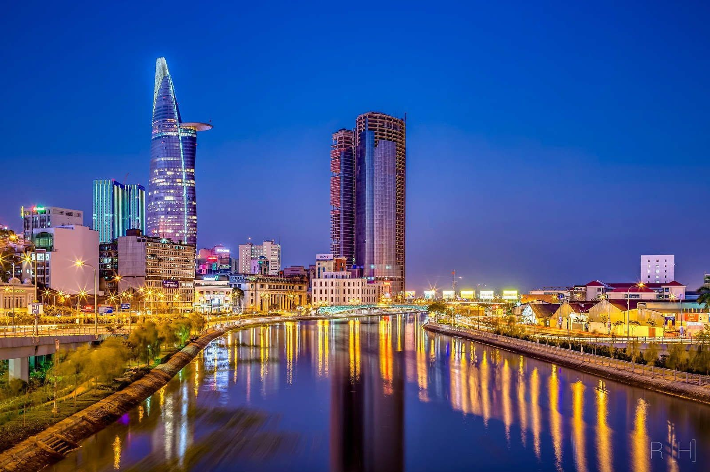

Sài Gòn
TP. Hồ Chí Minh được coi là một thành phố náo nhiệt với rất nhiều địa điểm vui chơi được khách du lịch nước ngoài rất thích. Vậy thì là một người Việt Nam, nhân dịp lễ tết được nghỉ học, nghỉ làm cả ngày, chúng ta dành thời gian để tìm hiểu thêm về thành phố thân thuộc và náo nhiệt của chúng ta với những địa điểm vui chơi cực hấp dẫn thôi nào. Cùng theo dõi bài viết sau nha!
1 Phố đi bộ Bùi Viện - Quận 1
Phố đi bộ Bùi Viện
Bạn là một người thích sự nhộn nhịp, rộn ràng thì không nên bỏ qua phố Tây Bùi Viện. Khu phố này càng về đêm lại càng đông đúc và nhộn nhịp hơn rất nhiều. Phố Tây Bùi Viện còn được mệnh danh là phố không ngủ bởi vì sự đông đúc và lượt khách đổ về thâu đêm suốt sáng để thưởng thức những món ăn, nghe nhạc xập xình cùng chai bia trên tay hoặc ngồi xem những màn xiếc múa lửa,..
Thời điểm tốt nhất để ghé qua phố Tây và hòa mình vào sự ồn ào náo nhiệt ở đây là vào khoảng 9h tối trở đi nha!
2 Nhà hát lớn Sài Gòn - Quận 1
Nhà hát lớn Sài Gòn
Nhà hát lớn Sài Gòn là một trong những địa điểm được rất nhiều du khách nước ngoài lựa chọn là một trong những nơi nên ghé qua khi đến Hồ Chí Minh. Đây là địa điểm tham quan giàu tính nhân văn và lịch sử. Ngoài ra còn là một nơi có kiến trúc tuyệt vời cùng cơ hội thưởng thức những loại hình truyền thống tuyệt đỉnh.
Để được tham quan và thưởng thức âm nhạc ở đây bạn nên đặt vé trước tại tầng hầm số 7 Quảng trường Lam Sơn, phường Bến Nghé, quận 1.